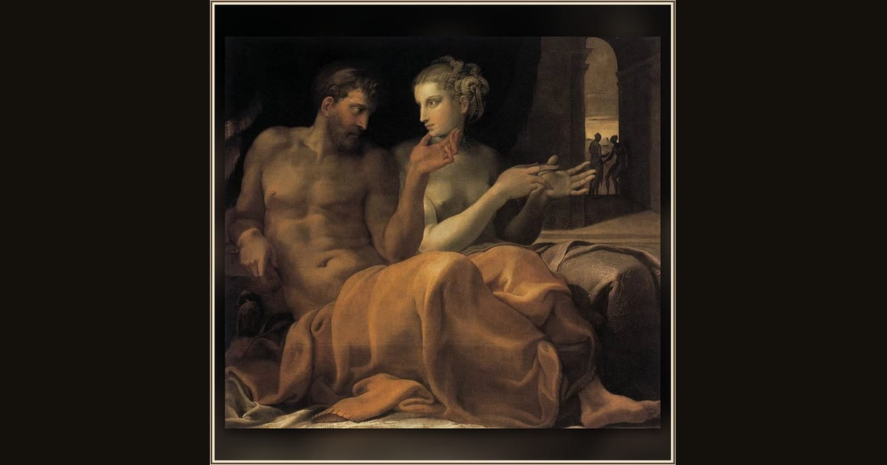

Ulysses and Penelope
Francesco Primaticcio · c. 1545 · Toledo Museum of Art · Toledo, Ohio, USA
Reunited at last, Odysseus tenderly cups Penelope's chin as the couple stays up late sharing everything that happened over twenty years apart. Explore its place in Book XXIII of the Odyssey.